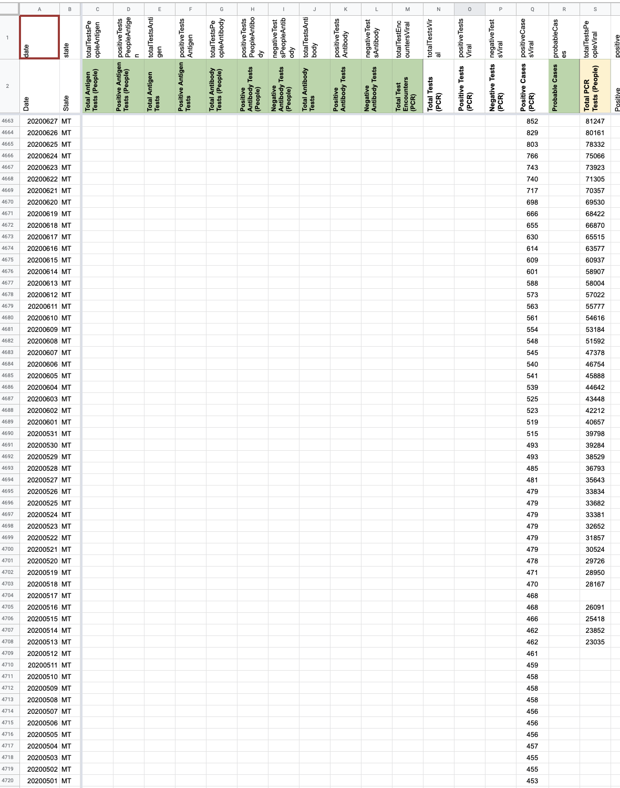
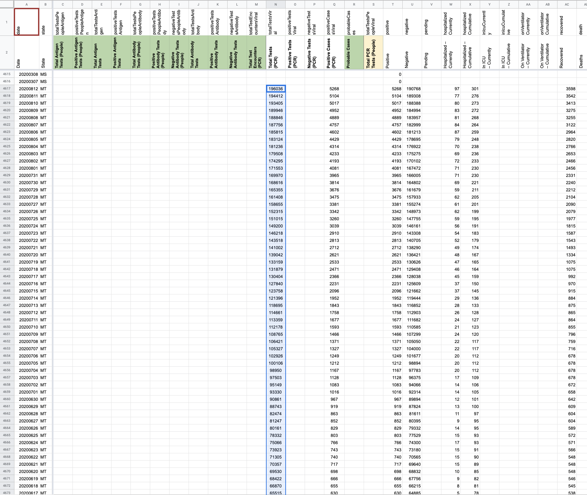
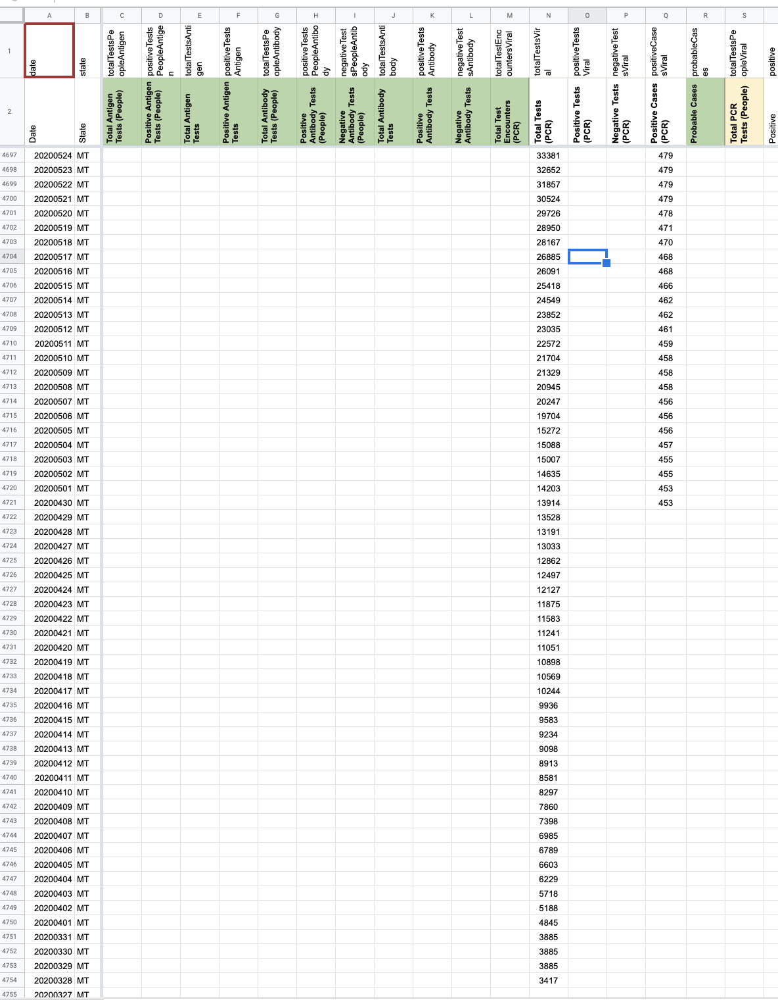

[MT] Inputting Total PCR Tests (People) in Total PCR Tests since reporting units are unclear
Issue number 742
jaclyde opened this issue on August 9, 2020 at 5:29 pm
MT reports testing numbers in unclear units. So we are moving the Total Test data to the specimens or unclear metric from the people metric. In addition we are backfilling the Total Tests from when we started recording them to when they became available in late March.
Source for the tests data is: ArcGis Query --> MT-Tests.json.txt
- [x] Update time series with data from 5/17-3/28
- [x] Move data from the people metric to the specimens metric
BEFORE 
BACKFILL Analysis MT - Analysis [MT] total people PCR.pdf
After move 
After move and backfill 